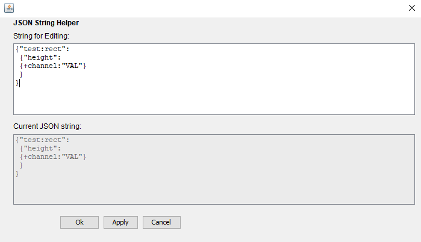
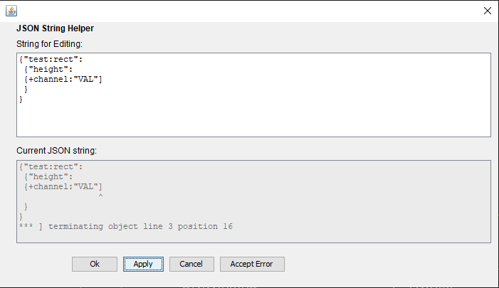

JSON Support
Tdct attempts to help the schematic designer with providing JSON
syntax checks for info nodes and JSON links.
For this there exists a special JSON dialog which pops up
- if { is entered into an empty info node value field or an empty link field
- on a right-click of an info node value field or a link field where the field value starts with {
The Dialog contains two text areas. Both are loaded with the contents of the info node value field or link field.
Note that tdct reformats the JSON objects from the top text area by replacing all newline characters with "~nl~".
If the "Apply" button is pressed, a JSON syntax check is performed on the string in the top text area and the
result is shown in the bottom text area.
If he "Ok" buttons is pressed, a JSON syntax check is performed on the string in the top text area.
If the check is successful, the JSON string is stored with the info node or link field.
If the check fails
- the result is shown in the bottom text area and the dialog does not close.
- the button "Accept Error" is shown which allows storing an erroneous JSON string.
The screen shot below shows the dialog after "Apply" was pressed and the syntax check succeeded.

The screen shot below shows the dialog after "Ok" or "Apply" was pressed and the syntax check failed.
Note the "Accept Error" button.
